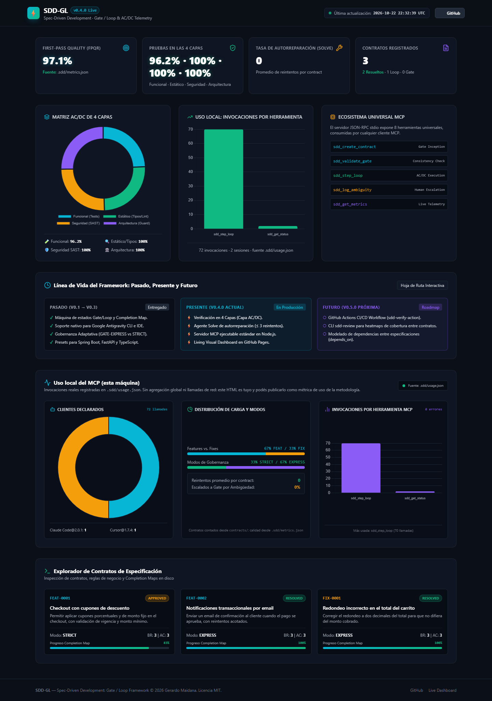

Así se ve con un proyecto en uso
Captura real de un proyecto de ejemplo conducido por el Loop: 97.1% FPQR, 72 invocaciones del MCP en 2 sesiones de cliente.

Esta página pública es el showcase del framework: no lee los contracts/ ni el .sdd/ privados, por eso las métricas de abajo aparecen como sin datos. En tu propio proyecto se llenan solas al usar el servidor MCP.
Fuente: sin datos (dashboard público del showcase)
El ledger de calidad todavía no registró pasos.
Promedio de reintentos por contract (sin telemetría registrada)
3 Resueltos · 0 Loop · 0 Gate
Matriz AC/DC de 4 Capas
Uso local: invocaciones por herramienta
sin datos
Ecosistema Universal MCP
El servidor JSON-RPC stdio expone 8 herramientas universales, consumidas por cualquier cliente MCP.
Línea de Vida del Framework: Pasado, Presente y Futuro
Hoja de Ruta Interactiva- ✓ Máquina de estados Gate/Loop y Completion Map.
- ✓ Soporte nativo para Google Antigravity CLI e IDE.
- ✓ Gobernanza Adaptativa (GATE-EXPRESS vs STRICT).
- ✓ Presets para Spring Boot, FastAPI y TypeScript.
- ⚡ Verificación en 4 Capas (Capa AC/DC).
- ⚡ Agente Solve de autorreparación (≤ 3 reintentos).
- ⚡ Servidor MCP ejecutable estándar en Node.js.
- ⚡ Living Visual Dashboard en GitHub Pages.
- ○ GitHub Actions CI/CD Workflow (sdd-verify-action).
- ○ CLI sdd-review para heatmaps de cobertura entre contratos.
- ○ Modelado de dependencias entre especificaciones (depends_on).
Uso local del MCP (esta máquina)
Invocaciones reales registradas en .sdd/usage.json. Sin agregación global ni llamadas de red: este HTML es tuyo y podés publicarlo como métrica de uso de la metodología.
Clientes declarados
sin datossin datos
Distribución de Carga y Modos
contracts/; calidad desde .sdd/metrics.json
Invocaciones por Herramienta MCP
sin datossin datos
Explorador de Contratos de Especificación
Inspección de contratos, reglas de negocio y Completion Maps en disco
Verificación en Capas, Reparación Automática, Métricas y Servidor MCP (AC/DC Layer)
Implementar la arquitectura de verificación en capas (AC/DC Layer), el agente de reparación rápida (Solve), el motor de métricas de First-Pass Quality, la auditoría de trazabilidad de especificaciones y la implementación ejecutable del Servidor MCP para SDD-GL.
Living Visual Dashboard & GitHub Pages Telemetry Generator
Implementar un generador de Dashboard HTML interactivo, visual y publicable en GitHub Pages (`docs/index.html`), que procese y presente en tiempo real las métricas de desarrollo pasadas, presentes y futuras, el estado de los contratos, la matriz de verificación en 4 capas (AC/DC) y la trazabilidad del código sin requerir lectura de texto plano línea por línea.
Escrow Agreement Lifecycle Validation
Validate the end-to-end capabilities, consistency, and resilience of the sdd-gl process framework using a complex escrow lifecycle implementation.